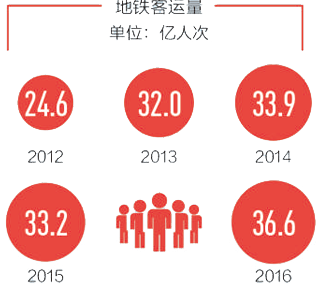
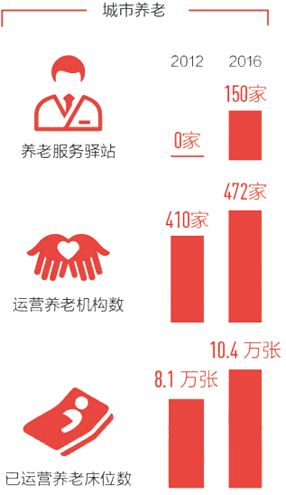
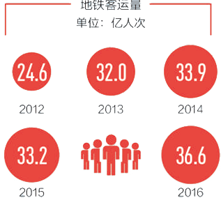
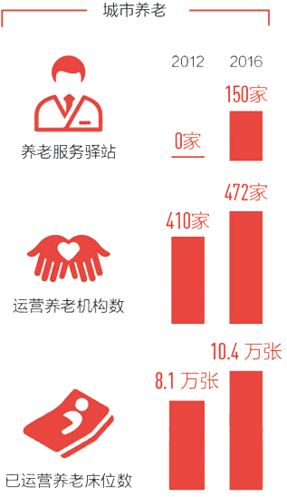

习近平总书记非常关心首都的建设和发展。党的十八大以来，习近平总书记两次视察北京并发表重要讲话，亲自主持中央政治局常委会会议听取北京城市总体规划编制工作汇报，对首都工作作出一系列重要指示，为我们指明了前进方向。
【点击查看】< <
这5年，对首都北京来说，是划时代的5年。
2014年2月26日是一个关键节点。习近平总书记考察北京，明确了新时期首都建设“四个中心”的城市战略定位，作出了京津冀协同发展的战略部署。在雾霾、拥堵、人口剧增中困顿的北京，发现了“豁然开朗”之路！
【点击查看】< <
京津冀协同发展战略，改变着三地昔日的不平衡，也改变着北京自身的不平衡。
过去，北京对河北、天津虹吸作用明显。其自身也是“头重脚轻”，发展不均。“北城富、南城穷，东西不平衡”长期存在，中心城6个区资源过度集中，向外便呈断崖式下降。
【点击查看】< <
科技兴则民族兴，科技强则国家强。
习近平总书记视察北京并发表重要讲话，明确了北京全国科技创新中心的战略定位，一个崭新的格局就此展开。
【点击查看】< <
一个“菜鸟”玩着游戏就学会了吉他伴奏，配备了深度体感传感器的智能机器人正在与人交流，贴上一个神奇的“智能云贴”身上疼痛立刻缓解了……科幻大片中的这些场景在创业公社·中关村国际创客中心正成为现实。
【点击查看】< <
一个“菜鸟”玩着游戏就学会了吉他伴奏，配备了深度体感传感器的智能机器人正在与人交流，贴上一个神奇的“智能云贴”身上疼痛立刻缓解了……科幻大片中的这些场景在创业公社·中关村国际创客中心正成为现实。
【点击查看】< <
PM2.5降了，蓝天多了；臭河少了，清渠多了；风沙少了，绿地多了……这五年来，北京坚定不移贯彻新发展理念，以超常的决心、超常的举措坚决打好污染防治攻坚战，加快补齐生态环境突出短板，实现首都经济社会可持续发展。
【点击查看】< <
大运河森林公园总投资近11亿元，占地面积10700亩，是北京建成的第一个万亩滨河森林公园，其中水域面积达2000亩。园内长达8公里的水系碧波荡漾，40余万株树木遍植两岸，潞河桃柳、月岛闻莺、明镜移舟……一系列景点再现北方水乡美景，令人目不暇接。
【点击查看】< <
2016年，北京市治理大气污染的成功经验被联合国环境规划署作为典型案例向世界各地推荐。首都大气污染治理已经形成了良好的大环境，只要我们深刻理解并践行绿色发展理念，坚持走“区域协同”“全民共治”的道路，推动各类污染物协同减排，就能加快推动空气质量持续改善，使大家呼吸“清洁空气”的天数持续增加。
【点击查看】< <
党的十八大以来，北京市深入贯彻习近平总书记系列重要讲话精神和治国理政新理念新思想新战略，各方面工作都迈出了积极步伐，取得重大进展。在新的发展阶段，如何进一步建设好、管理好大国首都？
【点击查看】< <
 



“天下大事，必作于细”。过去五年间，北京增投入、建机制、兜底线，将90%以上政府固定资产投资运用于民生改善项目。市民养老更安心了，医疗更便宜了，出行更便利了……这样的改变，群众眼里看得见，心里有了满满的获得感。
【点击查看】< <
过去这几年，正是互联网行业在中国高速发展时期，我直接享受到了北京发展的福利，不但获得了令人满意的收入，还能在思想观念上与这个时代最前沿的变化保持同步。
【点击查看】< <
习近平总书记强调，中国开放的大门永远不会关上，只会越开越大。我们将实行更加积极主动的开放战略，创造更全面、更深入、更多元的对外开放格局。
国际重要会议的举办地，世界重要赛事和文化活动的发生地，跨国公司的亚洲总部……北京，一直以开放包容的姿态，向世界展现东方古都独有的魅力。
【点击查看】< <
16年前，北京申奥成功，中国百年梦圆。两年前，北京再次获得了第二十四届冬奥会举办权。作为世界上第一个既举办过夏季奥运会，又将举办冬季奥运会的城市，“双奥之城”北京正在稳步走向“冬奥时间”。
【点击查看】< <
这片土地上蕴藏着不容忽视的潜力，并且也为很多外资企业的发展创造了得天独厚的优势。信息渠道越来越通畅、制度越来越规范、流程越来越清晰，北京先进的发展理念能更好地与国际社会接轨，为各类专业人才提供了更广阔的职业发展路径和就业机会。。
【点击查看】< <
这片土地上蕴藏着不容忽视的潜力，并且也为很多外资企业的发展创造了得天独厚的优势。信息渠道越来越通畅、制度越来越规范、流程越来越清晰，北京先进的发展理念能更好地与国际社会接轨，为各类专业人才提供了更广阔的职业发展路径和就业机会。
【点击查看】< <
2014年，“小官巨腐”这个词，首次出现在中央第二巡视组向北京市反馈报告中。北京市向群众身边的腐败亮剑。大起底、大排查，精确打击、快查快处，北京市纪委信访室、党风政风监督室和各纪检监察室等多个部门全线出击，各区纪委迅速行动。一场针对基层党员干部的反腐风暴席卷京城16区。
【点击查看】< <
经常有人惊讶地问我，一个80后怎么能把楼宇党建工作一干就是8年。我想说：这是一个年轻共产党员无比自豪的责任！我和同事们先后把税务、工商、司法等服务引入楼宇，建立了北京第一家楼宇综合服务管理平台；开通“党建网”，开发“微党建”APP平台；带动115家企业参与社会公益事业。
【点击查看】< <
这是一座古老的都。
“教化之行也，建首善自京师始。”北京因“都”而立，因“都”而兴，这里见证了中华文明的源远流长，写就了千年历史的恢弘篇章。红墙黄瓦的老皇城，青砖灰瓦的四合院……历史文化是这里的灵魂，人们像爱惜自己的生命一样爱护着这里的历史文化遗产。
这是一座奋进的城。
“风物长宜放眼量”。这里的人们视野开阔，这里的变化日新月异，这里的蓝天愈发清湛。壮观的新机场航站楼钢结构已经封顶，轰轰烈烈的交通市政工程全面开工，崛起的创新高地“三城一区”正成为北京经济转型发展的重要支撑。
都与城，在这里和谐共生。
【点击查看】< <